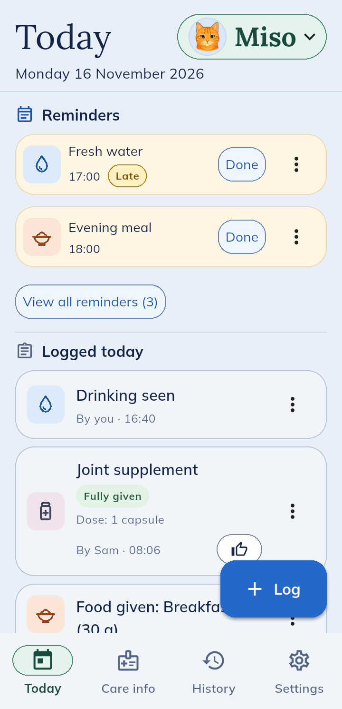
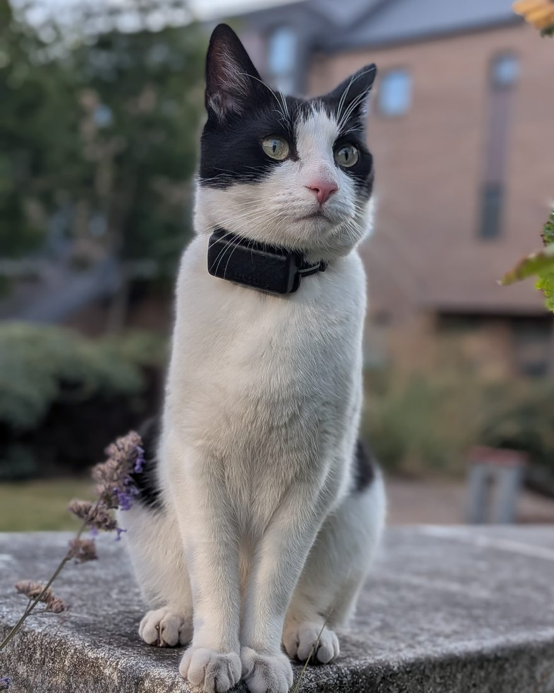
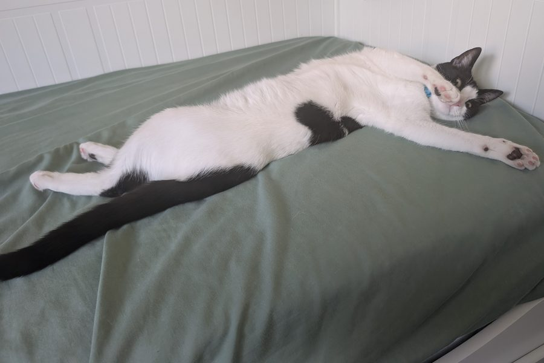

Keep track of your cat’s care
Record meals, medicine and vet visits, and see what everyone caring for your cat has done.
- Everyone sees the same record
- Sitter access that ends by itself
- Tap to ring the emergency vet
Early access requests are open Join on Android or iPhone/iPad. It’s free, and stays free for you. I’ll reply within a day with your joining details.
A short Google Form, no sign-in needed. For ages 16+, in the UK, US, Canada or Australia. Prefer email? Write to me instead.


How OurCat started
Hi, I make OurCat. The black-and-white one in the photos is Tokyo.
Tokyo is the first pet my partner and I have had together, and we were anxious about getting everything right. We wrote it all down, but our notes were spread across two phones and old messages, so we still kept asking each other who did what and when.
Then Tokyo had an accident. I needed the vet’s number and the emergency vet’s details straight away, and I didn’t have them to hand.
I started making OurCat to keep everything in one place, easy to find and in sync between us, even if one of us lost or changed a phone. Friends who cat-sit can use it too.
It’s still early days, which is why I’d love your help.

Where it fits in a normal week
Monday, 08:05
Your partner feeds the cat before work and logs it. You see it on your phone and don’t feed the cat twice.
Friday, away for the weekend
A friend’s cat-sitting. You give them three days’ access, so they can see the routine and log what they do. When the three days are up, their access ends by itself.
It works fine on your own, too. Sharing is there for when someone else helps out.
Fancy giving it a go?
Use it for a couple of weeks and tell me what’s handy and what’s annoying. A few sentences is plenty.
OurCat is a care record, not veterinary advice. For anything urgent, ring your vet.